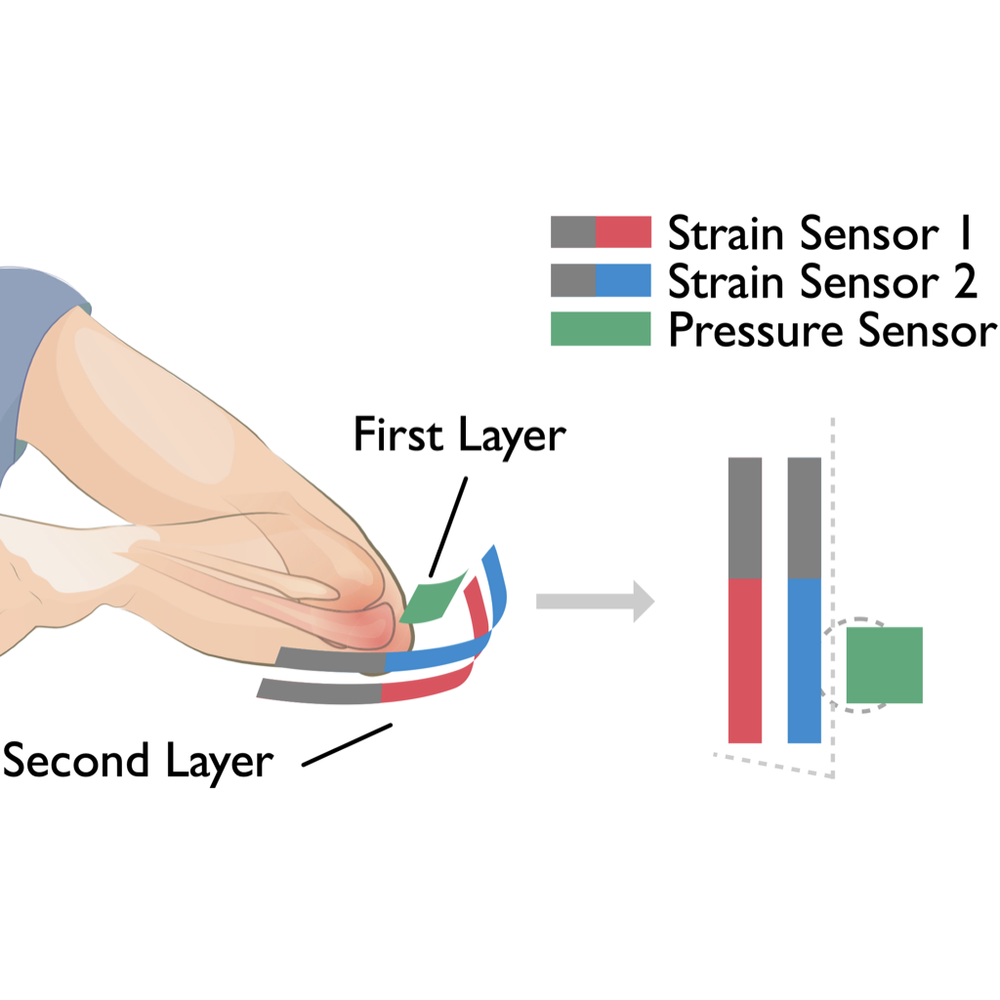

Siqi Wang
Courant Institute of Mathematical Sciences, New York University
60 Fifth Avenue
5th Floor, Office 506
New York University
New York, NY 10011, USA
Email: siqi.wang[at]nyu.edu
I'm a first-year Computer Science Ph.D. student at Courant Institute of Mathematical Sciences of New York University where I joined Geometric Computing Lab and started to work with professor Denis Zorin and professor Daniele Panozzo. Prior to NYU, I got my Bachelor's degree at Shanghai Jiao Tong University and worked at DALab (Digital ART Laboratory) of SJTU.
My research interests are Computer Graphics, Geometry Processing and Physics-based Simulation. Here is my resume! You can also view my Google Scholar profile.
What's New
09/27/2019
My homepage is built today!
Publications
Conference Paper
| C1 |
Reconstructing Human Joint Motion with Computational Fabrics UbiComp '19
Accurate and continuous monitoring of joint rotational motion is crucial for a wide range of applications such as physical
rehabilitation and motion training. Existing motion capture systems, however, either need instrumentation
of the environment, or fail to track arbitrary joint motion, or impose wearing discomfort by requiring rigid electrical sensors
right around the joint area. This work studies the use of everyday fabrics as a flexible and soft sensing medium to monitor joint
angular motion accurately and reliably. Specifically we focus on the primary use of conductive stretchable fabrics to sense the
skin deformation during joint motion and infer the joint rotational angle. We tackle challenges of fabric sensing originated
by the inherent properties of elastic materials by leveraging two types of sensing fabric and characterizing their properties
based on models in material science. We apply models from bio-mechanics to infer joint angles and propose the use of dual
strain sensing to enhance sensing robustness against user diversity and fabric position offsets. We fabricate prototypes using
off-the-shelf fabrics and micro-controller. Experiments with ten participants show 9.69° median angular error in tracking
joint angle and its sensing robustness across various users and activities.
@article{liu2019reconstructing,
title={Reconstructing Human Joint Motion with Computational Fabrics},
author={Liu, Ruibo and Shao, Qijia and Wang, Siqi and Ru, Christina and Balkcom, Devin and Zhou, Xia},
journal={Proceedings of the ACM on Interactive, Mobile, Wearable and Ubiquitous Technologies},
volume={3},
number={1},
pages={19},
year={2019},
publisher={ACM}
}
|
Journal Article
| J1 |
A New Grid Structure for Adaptive and Anisotropic Fluid Simulation |
Thesis
| T1 |
Energy Blockchain Technology for the Sale of Electricity Market
With the proposal of "three types, two networks" in the report of State Grid on NPC & CPPCC 2019, the concept of "ubiquitous power Internet of things" has brought new opportunities for distributed power trading. Block chain technology, with its characteristics of information symmetry, security, transparency and trustworthiness, is of great significance to the construction of platform-based and sharing-based enterprises in the aspects of multi-party balance and information sharing. It overcomes the shortcomings of expandability, long transaction time and information symmetry in the traditional centralized power trading mode. To this end, this paper designs a transaction-driven, decentralized and autonomous power management mechanism in the sales park, implements a blockchain-based power trading model on Hyperledger Fabric, deploys corresponding smart contracts, and eventually establishes the blockchain-based decentralization technology for distribution network. We discuss the double auction and P2P trading mechanisms between users in the block, the power package agreement and access mechanism between power sales companies and users. Smart contract test on Hyperledger Fabric shows that the model built in this paper can realize the distributed energy transaction in the sales park and visualize the management and transaction process on webpage. The code of smart contract is interpreted in detail. The digitalized and decentralized mechanism for alliance chain assets is introduced into the park power management system to create an open and transparent power transaction market, which comprehensively improves trade efficiency and the overall benefit of traders.
|
Research
|
OmniGrid – A New Grid Structure for Anisotropic Fluid The primary challenge we are tackling is to devise a novel grid structure named OmniGrid that can capture and simulate complex anisotropic flow features. As we know, how to capture the strong flux exhibited in non-axis-aliened directions has long been a challenge in the area of fluid simulation. The key idea we develop in this approach is to overlap tilted cells co-located with grid nodes adaptively and dynamically. Our grid structure preserves almost all the merits of a uniform Cartersian grid, including the cache-coherent data layout, the easiness for parallelization, and the existence of high-performance numerical solvers. Also, this grid can be seamlessly integrated into other adaptive grid structures. |
|

Reconstructing Human Joint Motion with Computational Fabrics This work studies the use of everyday fabrics as a flexible and soft sensing medium to monitor joint angular motion accurately and reliably. Specifically we focus on the primary use of conductive stretchable fabrics to sense the skin deformation during joint motion and infer the joint rotational angle. We tackle challenges of fabric sensing originated by the inherent properties of elastic materials by leveraging two types of sensing fabric and characterizing their properties based on models in material science. We apply models from bio-mechanics to infer joint angles and propose the use of dual strain sensing to enhance sensing robustness against user diversity and fabric position offsets. We fabricate prototypes using off-the-shelf fabrics and micro-controller. Experiments with ten participants show 9.69° mean angular error in tracking joint angle and its sensing robustness across various users and activities. |
Awards
08/2019
05/2019
12/2018
04/2018
10/2017
10/2016
09/2014
New York University MacCracken Fellowship
Outstanding Graduates of Shanghai
Hongyi Scholarship (for excellent overseas researchers)
First-class Scholarship of Lee Fushou Fund
Scholarship of the Temasek Foundation International Leadership Enrichment and Regional Networking Programme (TFI LEaRN)
Award for Outstanding Student Cadres
First-Prize in High School Students Mathematics Contest in China (provincial level)
Misc
I am a fan of classical music and play the piano in my leisure time. I'm also well-versed in Cucurbit Flute, a Chinese musical instrument. I learned Chinese folk dance for many years but it's been quite a long time since I last danced.
My first name is pronouced as "Si--Chi" and the last Chinese character is the one with same meaning as "Chess".
It's been 1470 days since I started Ph.D.!
You are the No.
th vistor of my homepage.